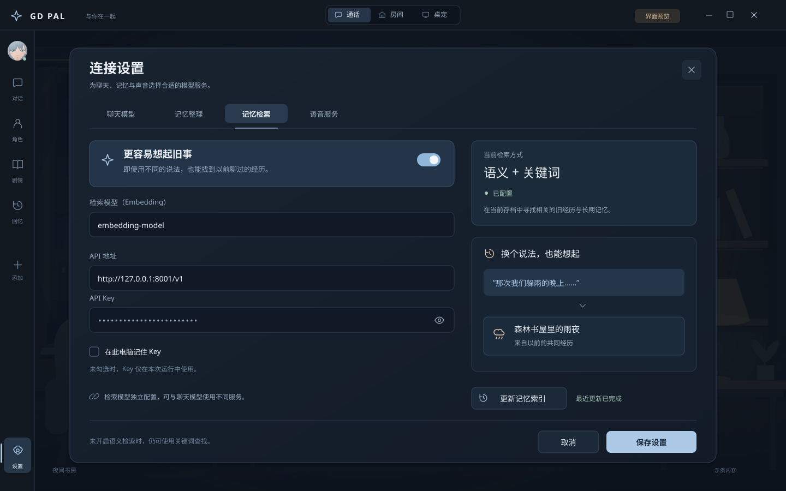

<!doctype html>
<html lang="zh-CN">
<meta charset="utf-8">
<meta name="viewport" content="width=device-width,initial-scale=1">
<title>GD Pal · 记忆与陪伴 UI 预览</title>
<style>
:root{color-scheme:dark;font-family:'Microsoft YaHei UI','Microsoft YaHei',sans-serif;background:#0b1018;color:#edf2f8}*{box-sizing:border-box}body{margin:0}header{height:74px;display:flex;align-items:center;gap:24px;padding:0 28px;background:#121b27;border-bottom:1px solid #28374a}h1{font-size:16px;font-weight:500;margin:0}nav{display:flex;gap:5px;flex:1;justify-content:center}button,a{font:inherit}button{border:0;border-radius:7px;padding:10px 16px;color:#93a8bf;background:transparent;cursor:pointer;font-size:13px}button[aria-selected=true]{background:#293e54;color:#dceafb}button:focus-visible,a:focus-visible{outline:2px solid #acc9e7;outline-offset:4px}a{font-size:12px;color:#acc9e7;text-decoration:none}main{padding:24px;max-width:1660px;margin:auto}img{display:block;width:100%;height:auto;border:1px solid #28374a;border-radius:10px;background:#10151d}footer{display:flex;gap:20px;justify-content:space-between;padding:18px 2px;color:#7f93aa;font-size:12px}#caption{color:#b2c5db}kbd{font-family:inherit;border:1px solid #34445b;border-radius:3px;padding:2px 5px}@media(max-width:850px){header{height:auto;flex-wrap:wrap;padding:18px;gap:14px}nav{order:3;flex-basis:100%;justify-content:start;overflow-x:auto}button{white-space:nowrap}main{padding:10px}footer{flex-direction:column}}
</style>
<header><h1>GD PAL · 记忆与陪伴</h1><nav role="tablist" aria-label="设计预览页面"></nav><a id="download" href="01-embedding-settings.svg" target="_blank">打开原始 SVG ↗</a></header>
<main><footer><span id="caption"></span><span>1440 × 900 · 示例内容 · 可用 <kbd>←</kbd> <kbd>→</kbd> 切换</span></footer></main>
<script>
const pages=[['01-embedding-settings','记忆检索设置','独立配置检索服务，模型、地址、凭据与索引更新集中在一处。'],['02-memory-search','旧回忆搜索','自然语言搜索旧经历，保留原来的语境，并能回到原对话。'],['03-relationship','相处档案','查看称呼、相处方式、共同习惯和约定，每项都保留来源。'],['04-companion-preset','陪伴预设','长期陪伴预设填入 120k 换段、12k 原文交接和主动交流。']];
let selected=0;const nav=document.querySelector('nav');
pages.forEach((p,i)=>{const b=document.createElement('button');b.role='tab';b.textContent=`0${i+1}  ${p[1]}`;b.onclick=()=>show(i);nav.append(b)});
function show(i){selected=(i+pages.length)%pages.length;const p=pages[selected];document.querySelector('#screen').src=p[0]+'.svg';document.querySelector('#screen').alt=p[1]+'预览';document.querySelector('#caption').textContent=p[2];document.querySelector('#download').href=p[0]+'.svg';[...nav.children].forEach((b,j)=>b.setAttribute('aria-selected',j===selected));location.hash=p[0];}
const initial=pages.findIndex(p=>'#'+p[0]===location.hash);show(initial<0?0:initial);
document.addEventListener('keydown',e=>{if(e.key==='ArrowRight')show(selected+1);if(e.key==='ArrowLeft')show(selected-1)});
</script>
</html>
